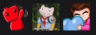
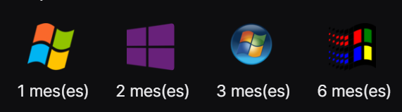

AlexVipaa 💚
Alex o mejor conocido como Vipa, es el mas reciente integrante del team Aesthetic que se convirtio en streamer, ademas de hacer streams, le gusta el futbol y el anime.
Su contenido en stream se dirige un poco mas hacia comentar eventos, polemicas y noticias de la copa de futbol de streamers llamada Kings League, aunque no se queda atras con los gameplays, ya que le gusta probar una gran variedad de juegos que se encuentren de moda.
Lo puedes encontrar en twitch con el siguiente enlace: Click aqui
Al suscribirte al canal de Alex puedes recibir beneficio como lo son:
-
Emotes
-
Insignias personalizadas
-
Ver el stream sin anuncios
-
Poder hablar en ocaciones donde se active el modo suscriptores
Emotes del canal

Insignias de suscripción
Estas cambian cada cierta cantidad de meses para reflejar el tiempo de suscripcion acumulado en el canal
